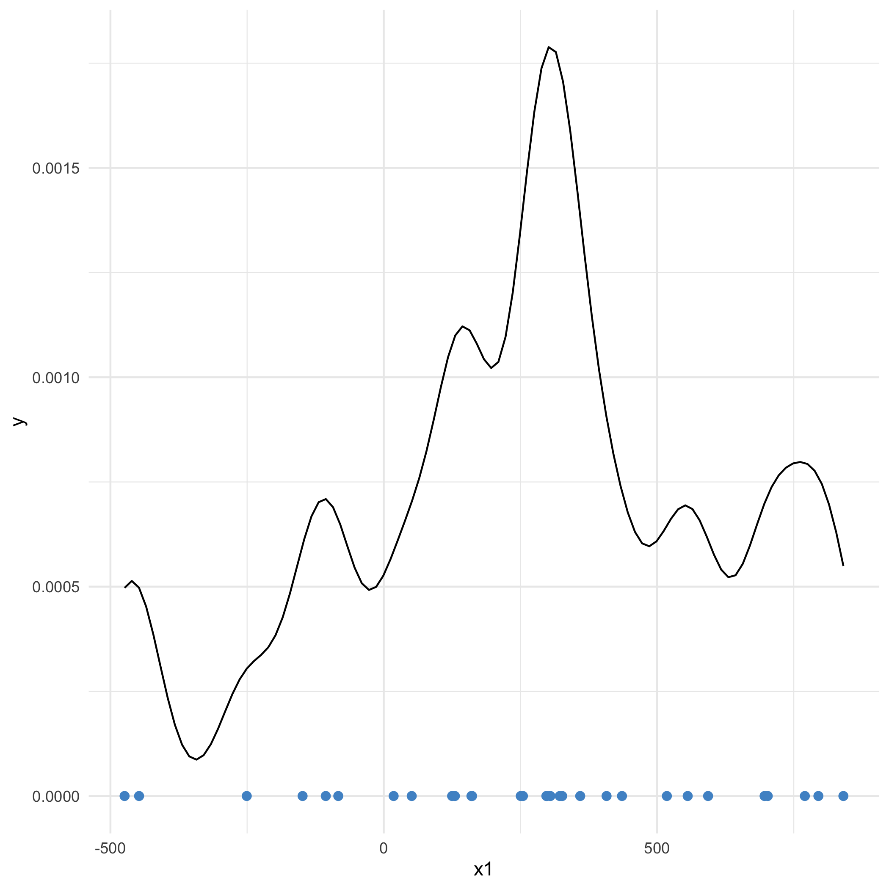

Introduction
One of the last assignments I did before graduation was a tutorial on Kernel Density Estimation (KDE) for my classmates taking Mathematical Statistics. This is the tutorial and activities I wrote with my classmate, Kaden Bieger, to walk our class through the basics of KDE. Working through the activities in this tutorial should give you a good working understanding of Kernel Density Estimation!
Nonparametric statistics is a rapidly developing field. It is also very different than the parametric content covered in most Introduction to Mathematical Statistics classes! Broadly speaking, nonparametric methods allow us to relax assumptions about our data. We often assume our data comes from a normal distribution, or at the very least from a distribution with mean $\mu$ and variance $\sigma^2$. Nonparametric methods are not based on such parameters.
Kernel density estimation (KDE) is a common technique used to estimate probability density functions (PDFs). In practice, we rarely know much at all about the true distribution of our sampled data. KDE allows us to get an estimated PDF without making unreasonable assumptions of our data.
Intuition
KDE is a method you’ve seen before even if you don’t know it! The intuition behind KDE is similar to the intuition behind a simple histogram. Histograms can be used to visually approximate the distribution of data. There are a few reasons we want a more sophisticated method, however. First, as the plot below illustrates, histograms are very sensitive to the number and width of bins. Additionally, a histogram provides an excessively local estimate – there is no “smoothing” between neighboring bins.
If you’ve ever made a density plot, you have even more experience with KDE. Behind the scenes, the ggplot2 function geom_density employs KDE! It turns out we can set the specific kernel and bandwidth when we call geom_density. We’ll cover kernels and bandwidths below.
Kernel Density Estimation
The goal of kernel density estimation to to estimate the PDF of our data without knowing its distribution. We use a kernel as a weighting function to smooth our data in order to get this estimate.
A kernel is a probability density function with several additional conditions:
- Kernels are non-negative and real-values
- Kernels are symmetric about 0
Several familiar PDFs, including the Gaussian and Uniform PDFs, meet these requirements. Once we have a kernel selected, we can implement KDE.
Given data $x = (x_1, x_2, \ldots, x_n)$, a kernel function $K$, and a selected bandwidth $h$, the kernel density estimate at point $s$ is defined
$$ \hat{f}n(s) = \frac{1}{nh} \sum{i = 1}^{n} K\left(\frac{x_i - s}{h}\right) $$
This is the kernel density estimator at a single point. To estimate an entire PDF, we apply the kernel to each point in our sample. The procedure is as follows:
- Apply the kernel function each data point in our sample

- Sum all $n$ kernel functions
- Divide by $n$. Because each kernel function integrates to one, the resulting KDE will still integrate to one.

In notation, we can write this procedure as $f(x) = \frac{1}{n} \sum_{i=1}^{n} K(x - x_i)$ where $x-x_i$ centers the kernel function on each $x_i$. Note the similarity to the formal definition of a kernel density estimator above. The only additional parameter is the bandwidth!
Acitivity 1
Consider 100 independent and identically distributed samples from an unknown distribution (plotted below). Given a bandwidth $h = 0.5$, write the Gaussian kernel density estimator for this sample at $s = 5$. We can use a standard normal with $\sigma^2 = 1$ and $\mu = 0$.
Try plotting your calculated kernel density estimate using ggplot. You can compare your result to the output of geom_density
Click for our solution!
my_est <- function(x, xi = 5, h = 0.5){
# put your estimate here!
1/((100 * h) *sqrt(2*pi)) * exp(-1/2 * ((x - xi)/h)^2)
}
# to get the whole kde estimate, sum my_est over each s
kern <- matrix(ncol = 100, nrow = 100)
kde <- function(x, x_i = 5, h = 0.5){
for(i in 1:100){
kern[i, ] <- my_est(x = asimdat$x, x_i = asimdat$x[i], h = h)
}
colSums(kern)
}
# uncomment lines in this ggplot code as you finish the functions below
ggplot(asimdat, aes(x=x)) +
theme_minimal() +
geom_density() + # generic geom_density
geom_density(bw = 0.5, kernel = "gaussian", color = "blue") + #closer to your estimator
stat_function(fun = my_est, color = "red") + # your estimate at s = 5
geom_line(aes(x = x, y = kde(x)), color = "pink") + # and your overall estimate!
NULL
Choosing a Kernel Function
Kernel functions are non-negative, symmetric, and decreasing for all $x > 0$ (because they’re symmetric, this also means they are increasing for all $x < 0$). Gaussian and Rectangular (uniform) are two kernel choices, though there are many others. The plot below shows kernel density estimates for the same simulated data using four common kernels. In this example, we use a fairly low bandwidth (0.3), to make differences between the kernels clear.
Choice of kernel doesn’t affect end result that much, although there are benefits to some kernels in particular. The Epanechnikov kernel, for example, is MSE optimal.
Bonus Activity: If you want to try out other kernel options inside geom_density, go to “Help” in Rstudio and search for “density.” Scroll down to “arguments” to see all possible kernels!
Choosing Bandwidth
The bandwidth is the width of our smoothing window – following the histogram example, this is like the width of bins. Bandwidth is generally represented as $h$. Bandwidth is how we control the smoothness of our estimate. The figure below shows a Gaussian KDE with various bandwidths.
Bandwidth tradeoffs
A small $h$ places more weight on the data, while a large $h$ performs more smoothing. We can use smaller bandwidths when $n$ is larger, particularly when the data has a small range (ie it is tightly packed). Larger $h$ is better when we have less data or more spread out observations.
There’s an analogy here with Bayesian priors – choosing $h$ lets us choose how much weight we want to give the data.
Activity 2
Using the kernel you defined above, plot a KDE estimate using various values for $h$. You can do so by updating the bandwidth you defined in my_est. For comparison, you can also use the parameter bw within a geom_density. How might you choose an optimal bandwidth?
Bias, Variance, MSE
Bias
Naturally, we would like to consider the bias and mean squared error of estimators produced by kernel density estimation. In this section, we outline proofs deriving the expected value, bias, and mean squared error for kernel density estimates. The proofs here are somewhat simplified but largely rely on u-substitution and Taylor expansions.
Given observations $x_1, x_2, \ldots, x_n \overset{iid}{\sim} f$, we define the expected value of our estimator as follows:
$$ \mathbf{E}[\hat{f}n(s)] = \mathbf{E}\left[\frac{1}{nh} \displaystyle \sum{i = 1}^{n} K \left( \frac{x_i - s}{h}\right) \right] = \frac{1}{h}\mathbf{E}\left[K \left( \frac{x - s}{h}\right) \right] = \frac{1}{h} \int K\left( \frac{x - s}{h}\right) f(x) dx $$
This first line follows simply from the definitions of kernel density estimators and expected value.
Next, we let $u = \frac{x - s}{h}$ and substitute:
$$ \mathbf{E}[\hat{f}_n(s)] = \frac{1}{h} \int K\left( u\right) f(hu + s) du $$
Then, we apply the 2nd order Taylor expansion for $f(hu + s)$ about $h = 0$. Omitting several steps of algebra, our Taylor expansion can be written
$$
\begin{aligned}
f(hu + s) &= f(s) + \frac{f’(s)}{1!}(u)(h-0) + \frac{f”(s)}{2!}(u^2)(h-0)^2 + o(h^2)
&= f(s) + huf’(s) + \frac{h^2u^2}{2}f”(s) + o(h^2)
\end{aligned}
$$
where $o(h^2)$ is some function which approaches zero as $h$ approaches infinity. Technically, this $o()$ notation indications that $o(h^2)$ becomes negligible compared to $h^2$ as $h \rightarrow 0$. For our purposes, we assume $o(h^2) \rightarrow 0$ as $h \rightarrow 0$.
We plug the Taylor expansion into our expected value above and simplify via algebra.
$$
\begin{aligned}
\mathbf{E}[\hat{f}_n(s)] & = \int K(u) \left[f(s) + huf’(s) + \frac{h^2u^2}{2}f”(s) + o(h^2)\right] du \
& = f(s)\int K(u) du + hf’(s)\int uK(u) du + \frac{h^2}{2}f”(s)\int u^2 K(u)du + o(h^2) \
& = f(s) + \frac{h^2}{2}f”(s)\int u^2 K(u)du + o(h^2)
\end{aligned}
$$
We can plug this into the definition of bias such that
$$
\begin{aligned}
\textbf{Bias}(\hat{f}_n(s)) &= E[\hat{f}_n(s)] - f(s) = \frac{h^2}{2}f”(s)\int u^2 K(u)du + o(h^2)
&= \frac{t \cdot h^2}{2}f”(s) + o(h^2)
\end{aligned}
$$
where $t = \int u^2 K(u)du$.
Activity 3
What happens to bias as bandwidth $h$ increases/decreases?
Variance
The proof for variance is very similar to the proof for bias. This proof is possible because $K$ is symmetric about 0. Feel free to work through this proof more on your own!
$$
\begin{aligned}
\mathbf{Var}(\hat{f}n(s))
&=
\mathbf{Var} \left(\frac{1}{nh} \displaystyle \sum{i = 1}^{n} K \left(\frac{x_i - s}{h}\right)\right)
&= \frac{1}{nh^2} \left(\mathbf{E}\left[ K^2 \left( \frac{x - s}{h}\right) \right] - \mathbf{E}\left[ K \left( \frac{x - s}{h}\right)\right]^2\right)
&\leq
\frac{1}{nh^2} \mathbf{E}\left[ K^2 \left( \frac{x - s}{h}\right) \right]
&=
\frac{1}{nh^2} \int K^2 \left( \frac{x - s}{h}\right)f(x) dx
\end{aligned}
$$
As above, we substitute $u = \frac{x-s}{h}$ and plug in a 1st order Taylor expansion of $f(hu + s)$.
$$
\begin{aligned}
\mathbf{Var}(\hat{f}_n(s))
&\leq
\frac{1}{nh^2} \int K^2(u)f(hu + s)hdu \
&=
\frac{1}{nh} \int K^2(u)f(hu + s)du \
&=
\frac{1}{nh} \int K^2(u)[f(s) + huf’(s) + o(h)]du \
&=
\frac{1}{nh} \bigg(f(s)\int K^2(u) du + hf’(s)\int uK^2(u) du + o(h)\bigg) \
\mathbf{Var}(\hat{f}_n(s)) &\leq \frac{f(s)}{nh}\int K^2(u) du + o\bigg(\frac{1}{nh}\bigg) \
&=
\frac{z}{nh}f(s) + o\bigg(\frac{1}{nh}\bigg)
\end{aligned}
$$
where $z = \int K^2(u) du$.
Activity 4
What happens to variance as $h$ changes? As $n$ changes?
Activity 5
Given the Bias and Variance above, find the Mean Squared Error of our estimator. Recall that the formula for MSE is $Var() + Bias^2()$.
Click to see our work!
$$
\begin{aligned}
MSE(\hat{f}_n(s)) &=
Bias^2(\hat{f}_n(s)) + Var(\hat{f}_n(s)) \
&=
\left(\frac{th^2}{2}f”(s) + o(h^2) \right)^2 + \frac{z}{nh}f(s) + o\left(\frac{1}{nh}\right) \
&=
\frac{t^2h^4}{4}\left[f”(s)\right]^2 + \frac{z}{nh}f(s) + o(h^4) + o\left(\frac{1}{nh}\right)
\end{aligned}
$$
Asymptotic MSE
Given the MSE we derived above, we can see that the Asymptotic MSE (AMSE) is $\frac{t^2h^4}{4}\left[f”(s)\right]^2 + \frac{z}{nh}f(s)$. Often, we use the AMSE to optimize $h$ at a given point.
Activity 6
Try optimizing the AMSE in terms of $h$. If you’re up for a challenge, try finding the optimal $h$ for the sample in Activity 1 (with $h = 0.5$ and $s = 5$)!
Click to see our work!
$$
\begin{align}
\frac{\partial}{\partial h} \textbf{AMSE}(\hat{f}n(s))
&=
\frac{\partial}{\partial h}\left(\frac{t^2}{4}\left[f”(s)\right]^2\right)\mathbf{h^4} + \left(\frac{z}{n}f(s)\right)\mathbf{\frac{1}{h}}
&=
\left(t^2\left[f”(s)\right]^2\right)\mathbf{h^3} - \left(\frac{z}{n}f(s)\right)\mathbf{\frac{1}{h^2}}
0 &= \left(t^2\left[f”(s)\right]^2\right)\mathbf{h^5} - \left(\frac{z}{n}f(s)\right)
\mathbf{h{opt}} &= \left(\frac{zf(s)}{nt^2\left[f”(s)\right]^2}\right)^{\frac{1}{5}}
\end{align}
$$
An Open Question: AMISE
The optimization in Activity 6 optimizes $h$ at a given $x$ value. A common method for optimizing $h$ across an entire distribution is using the asymptotic mean integrated square error (AMISE). As the name suggests, we can define the AMISE as follows:
$$ \textbf{AMISE}(\hat{f}_n(s)) = \int \left(\frac{t^2h^4}{4}\left[f”(s)\right]^2 + \frac{z}{nh}f(s) \right) dx $$ It’s possible to optimize AMISE in terms of $h$ to get the optimal bandwidth across an entire sample. We won’t ask you to do this – it’s definitely a challenge problem! In the end, you’d find that the optimal $h$ is dependent upon $\int \left[f”(x)\right]^2 dx$, or the curvature of the underlying PDF. Many recent advancements in KDE studies have been in the realm of estimating AMISE or the underlying curvature in order to optimize $h$.